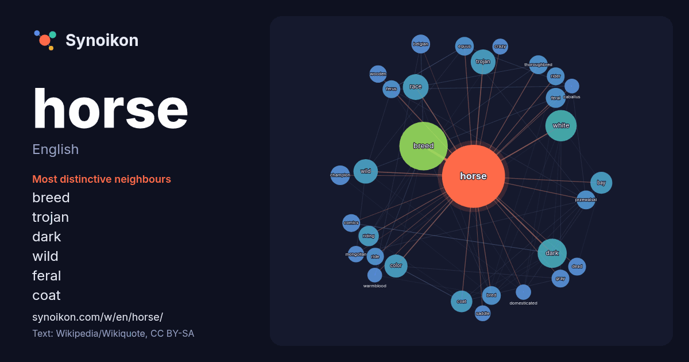

English · word of the day list
horse
The words found around it in 1831 instances from English Wikipedia, Wikiquote and Hacker News.

Most distinctive neighbours
- breed 125×
- trojan 36×
- dark 33×
- wild 27×
- feral 25×
- coat 24×
- equus 22×
- przewalski 22×
- riding 22×
- thoroughbred 21×
- bred 21×
- ferus 20×
- white 20×
- color 20×
- belgian 18×
- gray 17×
- mongolian 16×
- rider 16×
- saddle 15×
- wooden 15×
× = how many times more often than in general English Wikipedia text.
Most frequent neighbours
- breed 141
- white 59
- dark 51
- american 50
- race 40
- trojan 37
- wild 36
- color 32
- bay 29
- coat 28
- black 27
- riding 25
- feral 24
- champion 23
- small 22
- belgian 21
- bred 21
- equus 21
- przewalski 21
- thoroughbred 21
In context
- The horse (Equus ferus caballus) is a domesticated, one-toed, hoofed mammal. It belongs to the taxonomic family Equidae and is one of two extant subspecies Wikipedia snippets · Horse
- horse, horses, horsed, or horsing in . A horse is a hoofed mammal of the species Equus ferus caballus. Horse or Horses Wikipedia snippets · Horse (disambiguation)
- Horse racing is an equestrian performance activity, typically involving two or more horses ridden by jockeys (or sometimes driven without riders) over Wikipedia snippets · Horse racing
- Equestrianism (from Latin equester, equestr-, equus, 'horseman', 'horse'), commonly known as horse riding (Commonwealth English) or horseback riding (American Wikipedia snippets · Equestrianism
- Przewalski's horse (Equus ferus przewalskii or Equus przewalskii), also called the takhi, Mongolian wild horse or Dzungarian horse, is a rare and endangered Wikipedia snippets · Przewalski's horse
- The wild horse (Equus ferus) is a species of the genus Equus, which includes as subspecies the modern domesticated horse (Equus ferus caballus) and the Wikipedia snippets · Wild horse
- consume the most horse meat consume the meat from about 4.3 million horses a year. For the majority of humanity's early existence, wild horses were hunted Wikipedia snippets · Horse meat
- The Enumclaw horse sex case was a series of incidents in 2005 involving Kenneth D. Pinyan, an engineer who worked for Boeing and resided in Gig Harbor Wikipedia snippets · Enumclaw horse sex case
More English words
- art
- autumn
- bell
- bread
- bridge
- cat
- city
- climate
- clock
- death
- desert
- dog
- family
- food
- forest
- garden
- god
- gold
- health
- heart
- history
- honey
- island
- language
- life
- map
- mirror
- money
- mother
- mountain
- nature
- power
- rain
- road
- salt
- science
- shadow
- silence
- song
- star
- storm
- summer
- tea
- time
- train
- truth
- water
- winter
- work
Precomputed on 2026-10-09 with default settings (±5 words, medium corpus). The interactive map can refresh it with live data.